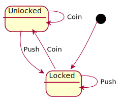
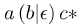
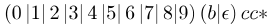
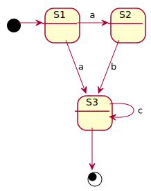
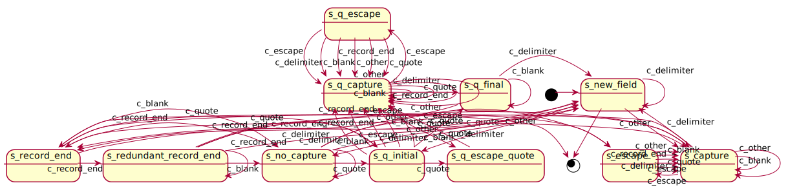
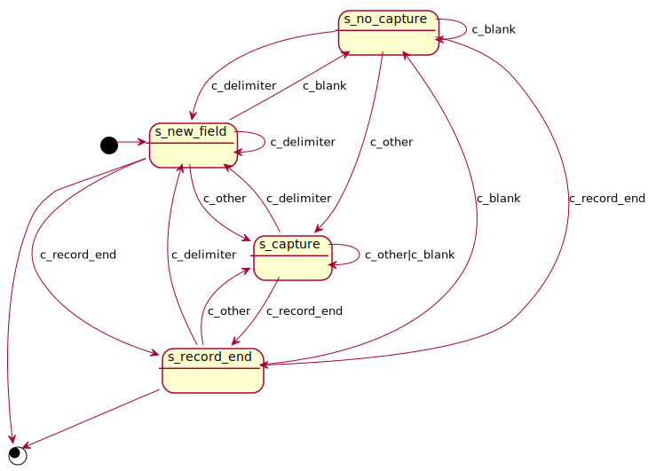
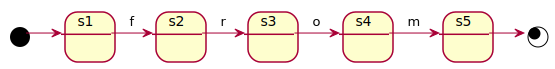
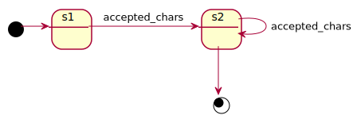
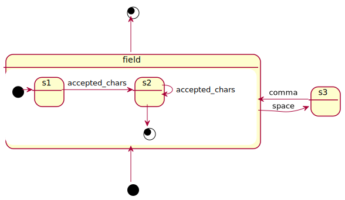

State Machines
Gerardo Gonzalez
@fmizzell

And non-standar CSVs
Theory of Computation
… is the branch that deals with how efficiently problems can be solved on a model of computation, using an algorithm.
- automata theory and languages
- computability theory
- computational complexity theory
Entscheidungsproblem

Halting Problem


Back to CSV
(?:(?:\r\n)?[ \t])*(?:(?:(?:[^()<>@,;:\\".\[\] \000-\031]+(?:(?: (?:\r\n)?[ \t])+|\Z|(?=[\["()<>@,;:\\".\[\]]))|"(?:[^\"\r\\]|\\. |(?:(?:\r\n)?[ \t]))*"(?:(?:\r\n)?[ \t])*)(?:\.(?:(?:\r\n)?[ \t] )*(?:[^()<>@,;:\\".\[\]\000-\031]+(?:(?:(?:\r\n)?[ \t])+|\Z|(?= [\["()<>@,;:\\".\[\]]))|"(?:[^\"\r\\]|\\.|(?:(?:\r\n)?[ \t]))*" (?:(?:\r\n)?[ \t])*))*@(?:(?:\r\n)?[ \t])*(?:[^()<>@,;:\\".\[\] \000-\031]+(?:(?:(?:\r\n)?[ \t])+|\Z|(?=[\["()<>@,;:\\".\[\]]))| \[([^\[\]\r\\]|\\.)*\](?:(?:\r\n)?[ \t])*)(?:\.(?:(?:\r\n)?[ \t] )*(?:[^()<>@,;:\\".\[\]\000-\031]+(?:(?:(?:\r\n)?[ \t])+|\Z|(?=[ \["()<>@,;:\\".\[\]]))|\[([^\[\]\r\\]|\\.)*\](?:(?:\r\n)?[ \t])*) )*|(?:[^()<>@,;:\\".\[\] \000-\031]+(?:(?:(?:\r\n)?[ \t])+|\Z|(?= [\["()<>@,;:\\".\[\]]))|"(?:[^\"\r\\]|\\.|(?:(?:\r\n)?[ \t]))*"( ?:(?:\r\n)?[ \t])*)*\<(?:(?:\r\n)?[ \t])*(?:@(?:[^()<>@,;:\\".\[\] \000-\031]+(?:(?:(?:\r\n)?[ \t])+|\Z|(?=[\["()<>@,;:\\".\[\]]))| \[([^\[\]\r\\]|\\.)*\](?:(?:\r\n)?[ \t])*)(?:\.(?:(?:\r\n)?[ \t])* (?:[^()<>@,;:\\".\[\] \000-\031]+(?:(?:(?:\r\n)?[ \t])+|\Z|(?=[\[" ()<>@,;:\\".\[\]]))|\[([^\[\]\r\\]|\\.)*\](?:(?:\r\n)?[ \t])*))*( ?:,@(?:(?:\r\n)?[ \t])*(?:[^()<>@,;:\\".\[\] \000-\031]+(?:(?:(?: \r\n)?[ \t])+|\Z|(?=[\["()<>@,;:\\".\[\]]))|\[([^\[\]\r\\]|\\.)*\] (?:(?:\r\n)?[ \t])*)(?:\.(?:(?:\r\n)?[\t])*(?:[^()<>@,;:\\".\[\] \000-\031]+(?:(?:(?:\r\n)?[ \t])+|\Z|(?=[\["()<>@,;:\\".\[\]]))|\ [([^\[\]\r\\]|\\.)*\](?:(?:\r\n)?[ \t])*))*)*:(?:(?:\r\n)?[ \t])*)? (?:[^()<>@,;:\\".\[\] \000-\031]+(?:(?:(?:\r\n)?[ \t])+|\Z|(?=[\[" ()<>@,;:\\".\[\]]))|"(?:[^\"\r\\]| ...
Regular expressions describe regular languages
A regular language can be defined as a language recognized by a finite automaton

- a
- accccc
- ab
- abcc

- 1c
- 5bcc


- accccc ,ab, abcc
Back to CSV … Again!
first_name, last_name, stuff\n\r
Gerardo , "Gonzalez Calle ", \\ After spaces\\, yes!\n\r
Camila, """Awesomeness"" Gonzalez", Great\\\nEscape\n\r


if ($endState == sm::STATE_RECORD_END)
{
$this->createNewRecord();
}
elseif ($endState == sm::STATE_NEW_FIELD)
{
$this->createNewField();
}
elseif (
$endState == sm::STATE_CAPTURE ||
$endState == sm::STATE_QUOTE_CAPTURE
)
{
$this->addCharToField($input);
}SELECT field1,field2 FROM blah;SELECT * FROM blah;


Takeaways
- State machines are simple but powerful
- Constraints can help simplify, and crystalize systems
- Validating, parsing, categorizing, control-systems
Recommendation
- !Implementation -> Mental exercise
Resources
Q&A
@fmizzell